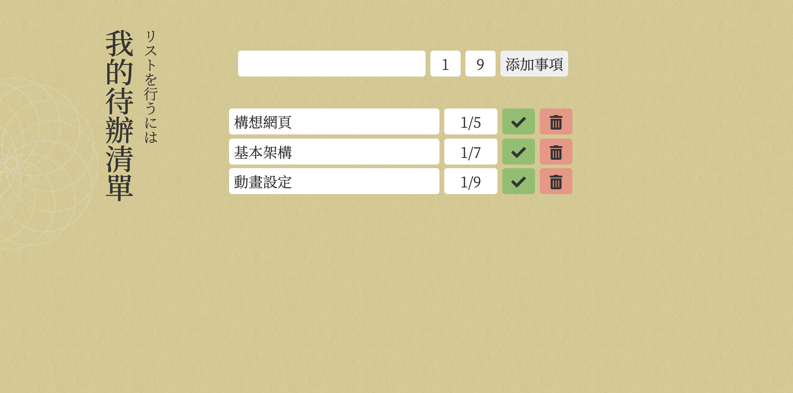

彭俊閎
Chun-Hung, PengProfile
個人簡介
畢業於淡江大學企業管理學系，曾任職前端工程師，對於網路世界充滿興趣，也有持續學習的動力。
就讀企管系的我擅長行銷與企劃，善於與他人共同協作，因此不論是學習上和同儕的配合亦或是工作上與多方人員皆能有完善的配合。
Skill
前端技能
-
前端網頁(HTML/CSS/JS)
-
RWD
-
Bootstrap4
-
Git
-
框架(React)
Contact information
聯繫方式
- 信箱：tommy60022073@gmail.com
- 手機號碼：0975-631-660
Education / Experience
學經歷
- 2021
- 銘島國際, 前端工程師 (實習)
- 工作內容：
- • 網站維運 ( 產品上架、新聞稿上稿、SEO優化 )
- • 產品迭代 ( 網站功能增減、BUG修正、版本控制 )
- • 前端網站建置
- • 競品分析
- • 協助協作方式更換 ( 從Trello到Jira )
- 淡江大學企業管理學系畢業
- 2019
- 交換學生
- • 透過學校的交換生機會，前往曼谷大學修習更多領域的課程，鞏固個人英語能力，藉由與不同國籍的學生共同報告，培養良好的組織能力與團隊合作精神，並開拓更加廣闊的視野。
- 2018
- 淡江大學USR計畫
- • 參與USR課程，以實境解謎結合淡水在地議題，讓不論是在地淡水人或是對淡水不熟悉的遊客，皆能透過手上的書本來了解淡水鮮少人知曉的歷史與老街所發生的人文議題。
- 大學生研究計畫 • 除了繼續培養企管相關能力，課餘之時，參加大專生論文研究計畫，透過延伸學習和與指導教授的討論，了解如何透過量化研究來實證個人假設。此過程增進了擬定研究方法與結果分析、撰寫論文和思辨能力。
Pactical
實作項目
- 個人簡歷網站
- 旅遊、部落格網站
- 購物車、遊戲攻略網站


